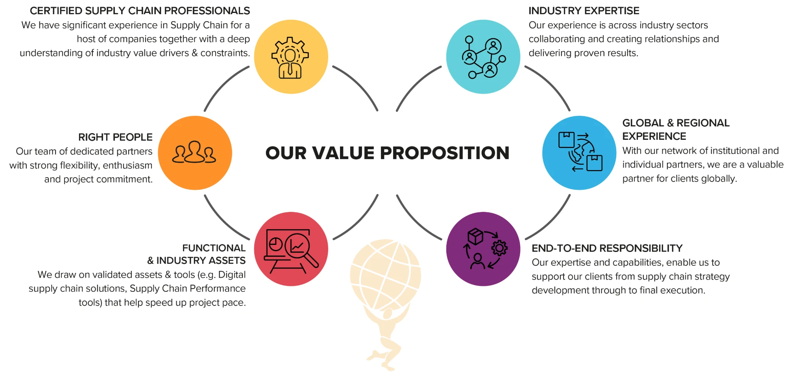

We don't just advise, we execute.
Strategy creates value only when it can be executed. Consulting diagnoses the problem and designs the solution; A-Z supply chain management sources, manufactures, validates and delivers it, through our New York headquarters, our global team and a network of 2,000+ factories.

Consulting

Not every challenge needs a new factory. Sometimes it needs the right questions: why are your costs too high, why are your lead times unreliable, and where is your supply chain leaking money?
We start with Executive Discovery and a PPI Diagnostic, a structured review of your Procurement, Production, Inventory and Delivery. We analyse your supplier data, SKUs, spend, MOQs, pricing, lead times and inventory, then score the operation with the Atlas Supply Chain Health Score, so you know whether it is optimized, stable but vulnerable, or in need of intervention.
From there we build the Atlas Supply Chain Blueprint: what to manufacture, where, with whom, at what volume and at what cost, with a 30, 60, 90, 180 and 365 day roadmap. Unlike conventional consulting, we don't stop at recommendations. Our advice draws on 20+ years on factory floors, and Atlas already has the supplier network to execute the plan.
PPI diagnostic
Procurement, Production, Inventory and Delivery mapped, with a Health Score out of 100.
Supplier assessment
Pricing, capacity, quality and risk benchmarked against our 2,000+ factory network.
Tariff & landed cost
Customs and tariff exposure modelled, so you see the real bottom line, not just the factory price.
Sourcing strategy
Stay, move or nearshore: China, Southeast Asia or closer to home, decided on evidence.
Resilience & risk
Single-source dependencies, geographic concentration and lead time variability scored, with contingencies in place.
Fractional leadership
Atlas as your external supply chain department, with a Control Tower and quarterly executive reviews.
A‑Z Supply Chain Management
One accountable team takes your product from design to delivery. You stay the consignee and owner of your goods; we run everything in between.
A-Z supply chain management is where strategy becomes execution. Our global team designs and engineers the product, selects the factory from our vetted network of 2,000+, governs quality through independent controls and tracks every shipment, while our New York headquarters keeps you informed at every milestone.
We never hold inventory, so you keep full visibility of costs, suppliers and terms. Run the whole chain through us, or bring us in for the stages where you need control most.
Product Design & Development
Your idea engineered for production at scale, with samples signed off before any tooling is cut.
Sourcing & Production
The right factory from our vetted network of 2,000+, with pricing and terms negotiated on the ground.
Quality Control
Three independent controls: factory selection, monitoring on the ground and third-party attestation.
Logistics
Freight, customs and delivery tracked end to end, while you stay the owner of your goods.
Product Design & Development

Can your product actually be manufactured at scale? Our global design engineering team makes sure the answer is yes, on budget and on schedule.
Our engineers work close to the factories that will build your product. They refine the design for manufacturing, select materials and finishes against your target cost, and produce the drawings, tolerances and specifications factories need to quote accurately.
Before any tooling is cut, you approve physical samples and prototypes. Because the same team then selects the factory and governs production, nothing is lost between the design and the production line.
Concept development
A rough idea shaped into clear product requirements, a target cost and a timeline.
Design for manufacturing
Form, function and brand details engineered for mass production and repeatable quality.
Materials & finishes
Glass, metal, wood, textile or plastic, chosen for the look, the budget and raw material availability.
Technical specifications
Drawings, tolerances and bills of materials that factories can quote from accurately.
Prototyping & sampling
Physical and 3D prototypes you can hold, test and approve before production.
Packaging design
Retail packaging and shipping cartons that protect the product and sell it.
Sourcing & Production

We match your product with the right factory from our vetted network of more than 2,000 manufacturers, then manage production on the ground.
Every factory is assessed before it receives an order, using our MORTC framework: Materials, Output, Resources, Technology and Costs. We look past the headline factory price to the total cost of ownership, and our local team negotiates pricing, MOQs and payment terms that a buyer working from overseas rarely gets.
A sourcing decision is validated when the factory delivers, not when the contract is signed. Once production starts, we stay on the factory floor: tracking milestones, resolving problems as they arise and keeping you updated, so you never chase a supplier across time zones.
Factory selection
Multiple suppliers examined, and the right one chosen from our 2,000+ network before production begins.
Local negotiation
Pricing, MOQs and payment terms negotiated in person, balancing your goals with the factory's.
Tooling & moulds
Moulds, dies and fixtures built to spec and owned by you.
Pre-production samples
A final sample signed off before the full run begins.
Production oversight
Daily follow-up on schedules, materials, capacity and output by our people on the ground.
Scale-up planning
Capacity confirmed for repeat orders and demand spikes, from a first batch to full volume.
Quality Control

Quality is governed through three independent controls: the right factory, our own monitoring on the ground, and third-party auditors paid to find mistakes.
Quality starts with factory selection: we examine multiple suppliers and choose the right one before production begins. Our QC professionals then agree standards with you based on your approved sample, check raw materials, inspect production in progress and run final inspections before goods are packed.
Independent audit groups and labs provide a second line of defence. After every inspection you receive a report with photos, measurements and a clear pass or fail, and defects are corrected at the factory, where they are cheapest to fix.
Factory audits
On-site checks of certifications, equipment, processes and working conditions.
Material checks
Raw materials and components verified before they go into production.
In-line inspections
Spot checks during the run to catch defects early.
Pre-shipment inspections
A final check of finished, packed goods against your approved sample.
Third-party attestation
Independent audit groups and labs, paid to find mistakes.
Inspection reports
Photos, measurements and a clear pass or fail after every visit.
Logistics

We move your goods from the factory floor to your door, and you stay the consignee and owner the whole way.
We plan and coordinate carriers, freight forwarders, customs brokers and warehouses without holding inventory ourselves. Your goods ship in your name, so you keep full ownership and control.
Our global team tracks every shipment from pickup to delivery, managing cost, timeframe and tariff exposure along the way. We book sea, air and rail freight, prepare export documentation, coordinate customs clearance and arrange storage and final delivery to your warehouse, fulfilment centre or retail partner.
Freight booking
Sea, air and rail options matched to your budget and deadline.
Shipment tracking
Every shipment followed from pickup to arrival, with contingency routes when disruption hits.
Export documentation
Commercial invoices, packing lists and certificates prepared at origin.
Customs clearance
Entries filed and goods released without delays.
Duties & compliance
Classification, tariff exposure and duty planning, so landed cost holds no surprises.
Storage & delivery
Warehousing and final-mile delivery to wherever your goods need to be.
Ready to simplify your supply chain?
Let's build something great together.
Start your project